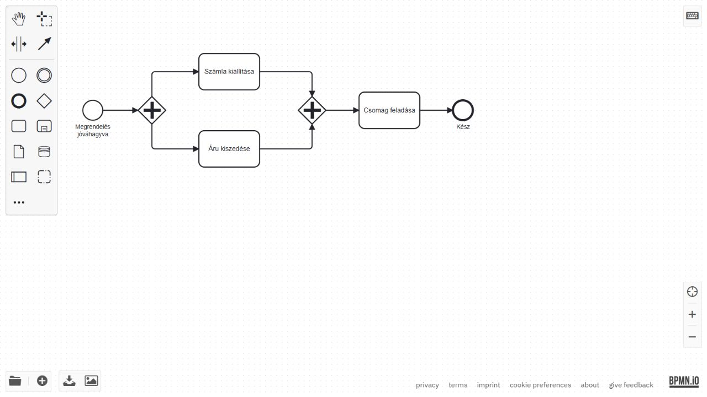
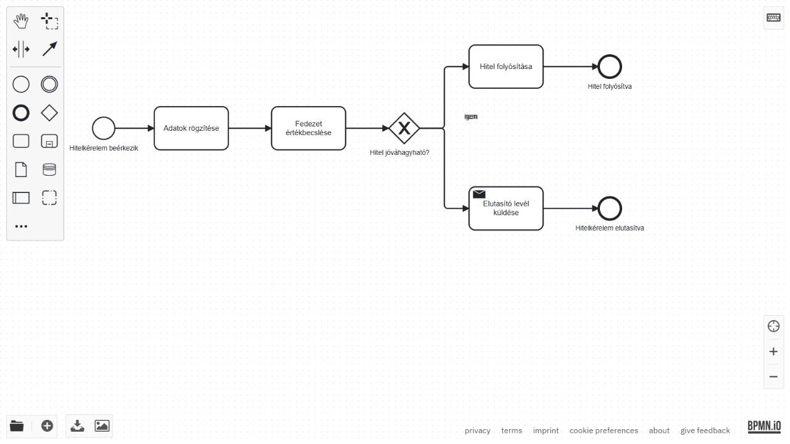
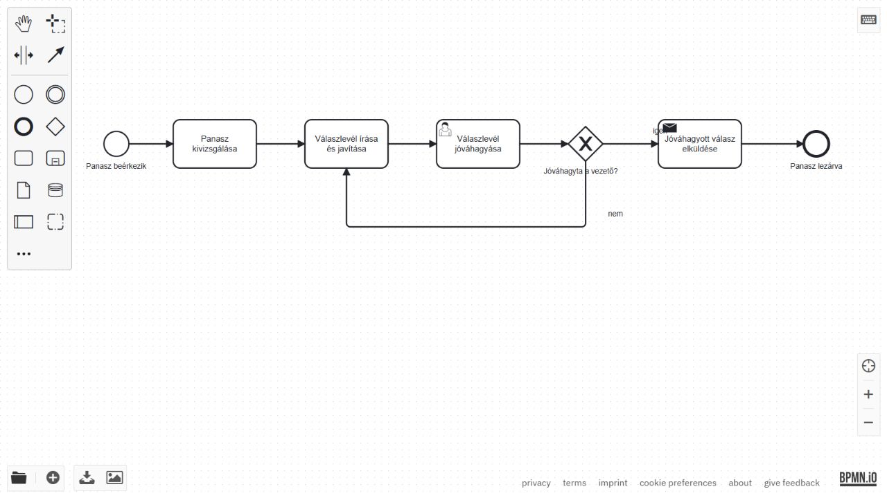

BPA · nap02 · 06 · Mentett, ellenőrzött eredmények (2026-10-05)
Hibavadászat



6. blokk – Hibavadászat és nyolcpontos ellenőrzés
Talált hibák és javítások
- hibas_1: AND elágazás után XOR összevezetés állt. Mindkét ág külön tokent engedhetett a feladásra. Az összevezetés AND lett: a csomag feladása csak a számla és az áru elkészülte után indul, egyszer.
- hibas_2: hiányzott az XOR kérdése, mindkét ág címkéje és az egyik feladat neve; a fedezetértékbecslés árva volt. Az értékbecslés az adatrögzítés és a döntés közé került. Kérdés: Hitel jóváhagyható? Igen → Hitel folyósítása; nem → Elutasító levél küldése. Mindkét ágnak elnevezett záró eseménye van. Az értékbecslés minden kérelemhez való elhelyezése a gyakorló javítás modellezési feltevése; tényleges banki szabályt nem állít.
- hibas_3: nem volt záró esemény vagy kilépés; a döntés kérdés és címkék nélkül állt, a jóváhagyási lépés pedig visszaküldött a levélíráshoz. Most: vizsgálat → levél írása/javítása → vezetői jóváhagyás → Jóváhagyta a vezető? Igen → jóváhagyott válasz elküldése → Panasz lezárva. Nem → vissza a levél javításához. A vezetői jóváhagyás minden javítás után megismétlődik.
Ellenőrzőlista
- Elnevezett kezdő esemény van.
- Minden út elérhet elnevezett záró eseményt.
- Nincs árva elem; a kezdő kivételével van bejövő, a záró kivételével van kimenő kapcsolat.
- Minden tevékenység cselekvést megnevező nevet kapott.
- Minden elágazó XOR kérdésként elnevezett.
- Minden elágazó XOR ág címkézett.
- A párhuzamos ágak AND összevezetésben zárulnak.
- Az AND ágak nem döntési címkéket kaptak.
Mindhárom javított modellre teljesül a lista, és mindhárom megnyílt bpmn.io-ban. Az elérhetőség ellenőrzése nem bizonyítja, hogy egy üzleti jóváhagyási ciklus valaha pozitív választ kap; a panaszfolyamatnak van helyes kilépési útja, de a külső döntés továbbra is szükséges.
Fájlok: hibas_1_javitva.bpmn, hibas_2_javitva.bpmn, hibas_3_javitva.bpmn. Képernyőképek és gépi szerkezeti ellenőrzés a deliverables mappában.
Az 5. napi első beadandó banki modell, BIMP-szimuláció, változatok összevetése és üzleti javaslat lesz. A konkrét paraméterek, leadási fájlok és határidő az 5. napi csomagból/Moodle-ből jönnek; ezt a nap02 csomag nem tartalmazza.